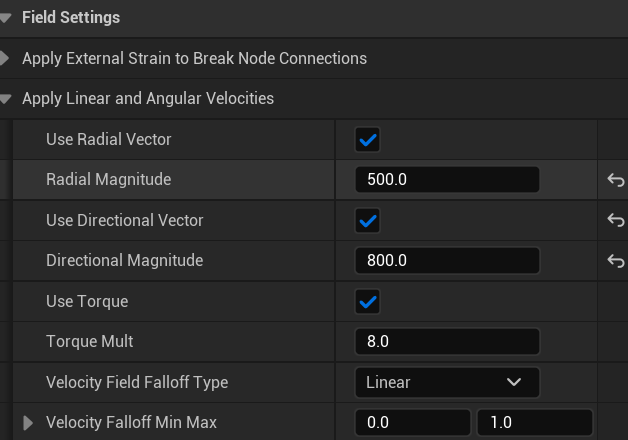
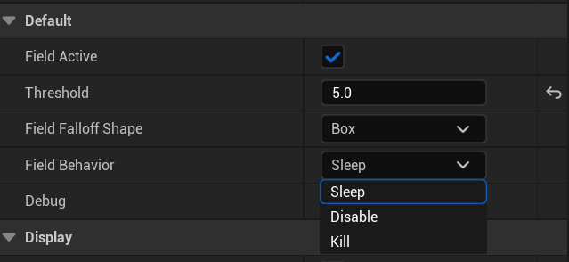

Explosion VFX & Destruction System Study
VFX Study · Unreal Engine 5 · Chaos System · 11.2025
Description
This project focuses on creating a realistic explosion VFX in Unreal Engine 5, and combining it with UE5's built-in Chaos Fracture system to simulate realistic destruction effects. The goal was to explore how to sync explosive visuals with mesh breaking behavior, resulting in a dynamic and cinematic VFX scene.
Result

Workflow Overview
- Used the Chaos System to create a pre-fractured ground mesh
- Applied a radial force field to trigger the fracture and simulate debris scattering after the explosion
- Created custom explosion VFX and smoke trail VFX for flying debris
- Controlled the entire sequence using a Blueprint-triggered explosion
- Added animation timing to present the final explosion as a cinematic moment
Chaos System
Fracture Setup — Chaos Hierarchical Clustering
1. Hierarchical Fracture Levels
- Level 0: Whole ground mesh
- Level 1: Break into large chunks
- Level 2+: Further subdivide into smaller pieces
2. Clustering with Auto Mode
- Used Cluster → Auto to automatically organize fragments into levels
- Level 1: Cluster Sites = 200
- Level 2: Auto-generated from remaining pieces
- Level 3: Cluster Sites = 75
- Level 4: Cluster Sites = 50


Chaos Fracture Setup
Damage Settings for Fracture Activation
In the Details → Damage panel, each Index corresponds to a fracture level. Index 0 applies damage to Level 1, Index 1 to Level 2, and so on. Since there are 4 fracture levels, set up Index 0–3 to control how each layer reacts to impact or force.
Performance Optimization
- Used Tiny Geo to merge extremely small fragments, reducing overall complexity
- Before optimization: 1500+ fragments
- After optimization: 914 fragments, significantly improving performance


Chaos System — Force Field
FS_MasterField
UE5 Blueprint force field that applies custom directional forces to fractured meshes. In Field Settings, enable Apply Directional Vector to push debris upward. Adjust Magnitude to control the explosion force strength.

FS_MasterField setup
FS_SleepDisable_Generic
After the explosion, debris may keep shaking due to ongoing force influence. This Blueprint helps stabilize debris by applying a sleep condition. Set to Sleep Mode: fragments entering the field will stop simulating once below a motion threshold.

FS_SleepDisable_Generic setup
Explosion VFX & Smoke Trail VFX
To create the explosion effect, the following emitters were used:
- Multiple Flame Emitters — for explosive bursts of fire
- 1 Smoke Emitter — for post-blast lingering smoke
- 2 Spark Emitters
- One for mid-air sparks that quickly fade out
- One for ground sparks that fall and slowly burn out
- Multiple Debris Emitters — to simulate explosive debris flying outward

Explosion emitters overview
In this project, I explored two ways to make one emitter follow another:
Method 1 — Spawn Particles from Other Emitter
Directly spawns particles from the location of another emitter.

Spawn Particles from Other Emitter
Method 2 — Event Handler Method
- In the source emitter (A): add a Generate Location Event
- In the following emitter (B):
- Add an Event Handler module
- Set it to Receive Location Event from emitter A
- This allows emitter B to dynamically follow emitter A's particle locations

Event Handler Method